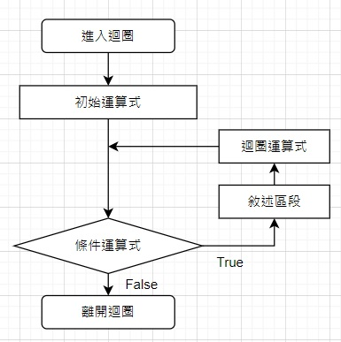
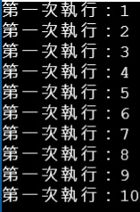
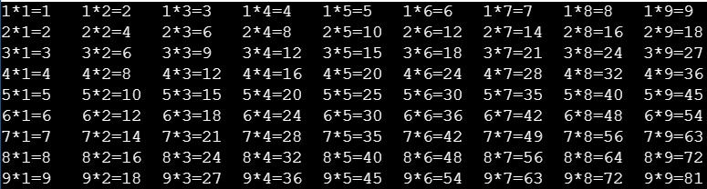
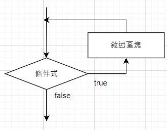
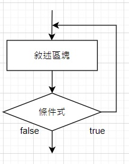
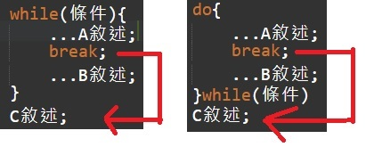
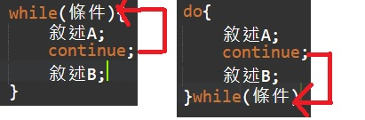

迴圈
迴圈
本章節會介紹迴圈的使用方法還有範例
1.for迴圈
程式碼範例
執行結果：
2.巢狀for迴圈
for迴圈裡面在包一層for迴圈，這邊用99乘法表來解說比較易懂
程式碼範例
第一層迴圈 執行1~9這範圍的數字；第二層迴圈 執行1~9這範圍的數字
所以這兩個迴圈會做到9
首先，先執行第一層迴圈的i = 1，接下來下一行一樣是for迴圈，所以會執行j = 1
接下來會執行第三行的(i + "*" + j + "=" + i * j的部份)，(這邊的 + 表示做連結 ""表示字串)
接著輸出結果會是：i * j = 1 * 1
再回到第一層迴圈執行i = 2 ， 下一層j = 2的部份，直到最後做到9*9，結束迴圈
\t為一個tab的space，\n為換一行
執行結果：
3.while迴圈
前測式迴圈(先偵測條件，當條件是True時，會做迴圈內的事情，直到條件變False才會停止
程式碼範例
後側式迴圈(會先做一次迴圈內的事情，做完一次後才會去判斷條件式是否為True，如果為True則繼續執行， 如果為False則跳出迴圈
程式碼範例
break 和 continue敘述
break 如果在前測、後側式迴圈使用break，就會跳出該層迴圈執行C敘述的程式。範例：
continue 執行while迴圈程式，碰到continue時，就會跳到while(條件式)的地方
